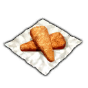

Fried Fish

This is the Odin's favorite food
It is delicious and can provide Odin enough protein.
Ingredients
- Fresh Fish
- Chilli
- Soya Source
- Pepper
- Salt
Steps
- Mix soya source with salt and Pepper
- Fry Chilli till it is soft
- Fry the fish together with chilli
- Put the mixed source in the pan